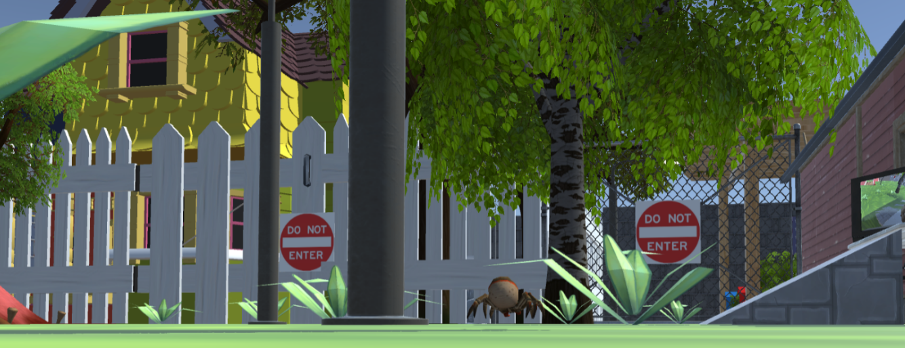

These are my projects!
As project manager, I led and managed a group of 2 other students by directing tasks, organizing workflow, and hosting scrum meetings; I also managed Git submissions, project deadlines, and was also responsible for bug testing and maintaining project quality control. In terms of programming, I created the entirety of environmental design and level layout/progression, in addition to many various C# scripts for core gameplay mechanics and player-environment interaction. Furthemore, I designed and created all of the UI (main menu, tutorial, pause, game over/win scenes and respective scripts).
I calibrated a Fisheye Stereo Camera setup using Python OPENCV to return live rectified video, pictures, and depth maps for depth detection. This was done in conjunction with YOLO V4's Object Detection capability to simultaneously determine the identity of an object and it's relative distance from the camera system, all in real time.